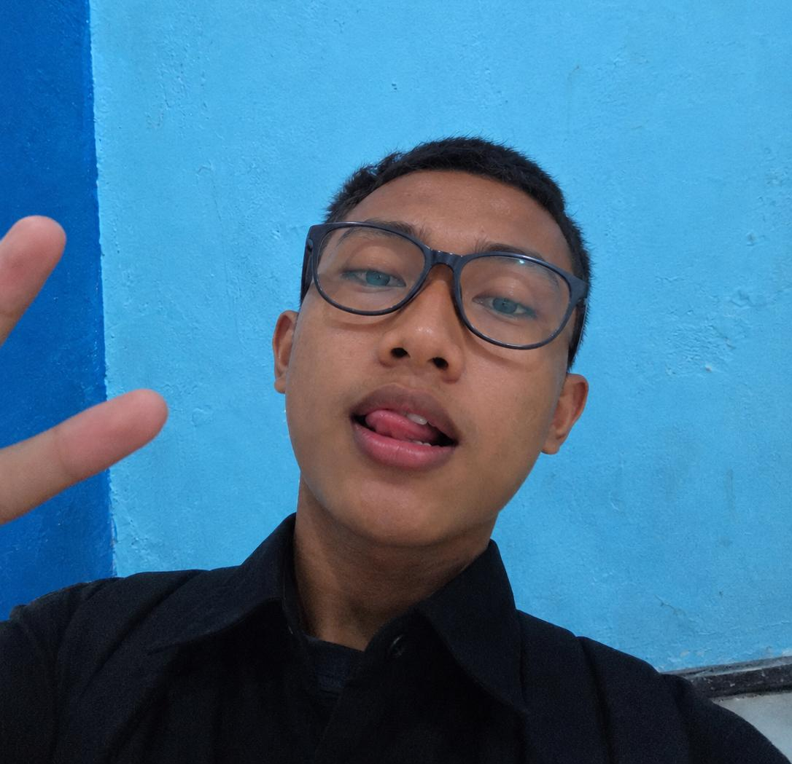

Halo, saya Luqman Al Farisi
IT support di SMKN 1 Pungging.

Membuat teknologi
bekerja lebih baik.
Halo, saya Luqman Al Farisi.
Saya memiliki pengalaman membantu kebutuhan IT di sekolah, mulai dari menangani kendala komputer hingga memastikan perangkat pendukung pembelajaran siap digunakan. Saya mengutamakan komunikasi yang jelas, ketelitian, dan penyelesaian masalah.
IT Support Sekolah
2 tahun · tahun ke-3 berjalanMendukung operasional teknologi sekolah, membantu guru dan staf mengatasi kendala perangkat, serta melakukan pemeriksaan dan perawatan dasar.
Pengalaman IT Support
IT Support — Lingkungan Sekolah
2 tahun, berlanjut ke tahun ke-3Menangani dukungan teknis harian dan membantu memastikan perangkat teknologi dapat digunakan untuk kegiatan sekolah.
Maintenance dan Troubleshooting
Bagian dari tugas ITMelakukan pengecekan awal, identifikasi masalah, dan penerapkan solusi sesuai SOP dan kebutuhan.
Hal yang saya kerjakan.
Menangani masalah umum pada komputer atau laptop.
Pengecekan komputer, printer, dan periferal.
Pemeriksaan koneksi dan kendala jaringan.
Membantu guru, staf, dan pengguna.
Instalasi serta konfigurasi software dasar.
Mencatat masalah dan langkah penanganannya.
Mari terhubung
dengan saya.
Punya pertanyaan atau ingin berdiskusi tentang dukungan IT? Hubungi saya melalui kontak berikut.
Butuh bantuan IT?
Saya terbuka untuk berdiskusi, berbagi pengalaman, dan kesempatan yang relevan di bidang teknologi informasi.
Kirim Email ↗